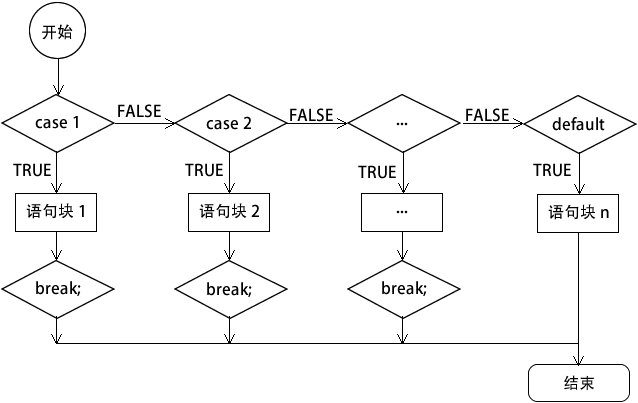

首页 > 编程笔记
PHP switch case语句
switch 语句和 if...else if...else 语句相似，也是一种分支结构，与 if...else if...else 语句相比 switch 语句更加简洁明了。
switch 语句由一个表达式和多个 case 标签组成，case 标签后紧跟一个代码块，case 标签作为这个代码块的标识。switch 语句的语法格式如下：
一般来说，switch 语句最终都有一个默认值 default，如果在前面的 case 中没有找到相符的条件，则执行默认语句，和 else 语句类似。
switch 语句的执行流程如下图所示：
在使用 switch 语句时应该注意以下几点：
【示例】使用 date() 函数获取当前星期的英文缩写，根据缩写打印今天是星期几，代码如下所示：
switch 语句由一个表达式和多个 case 标签组成，case 标签后紧跟一个代码块，case 标签作为这个代码块的标识。switch 语句的语法格式如下：
switch(表达式){
case 值 1:
语句块 1;
break;
case 值 2:
语句块 2;
break;
... ...
case 值 n:
语句块 n;
break;
default:
语句块 n+1;
}
一般来说，switch 语句最终都有一个默认值 default，如果在前面的 case 中没有找到相符的条件，则执行默认语句，和 else 语句类似。
switch 语句的执行流程如下图所示：

图：switch 语句执行流程
图：switch 语句执行流程
在使用 switch 语句时应该注意以下几点：
- 和 if 语句不同的是，switch 语句后面表达式的数据类型只能是整型或字符串，不能是 bool 型。通常这个表达式是一个变量名称，虽然 PHP 是弱类型语言，在 switch 后面表达式的变量可以是任意类型数据，但为了保证匹配执行的准确性，最好只使用整型或字符串中的一种类型。
- 和 if 语句不同的是，switch 语句后面的花括号是必须有的。
- case 语句的个数没有规定，可以无限增加。但 case 标签和 case 标签后面的值之间应该有一个空格，值后面必须有一个冒号，这是语法的一部分。
- switch 匹配完成以后，将依次逐条执行匹配的分支模块中的语句，直到 switch 结构结束或者遇到了 break 语句才停止执行。所以，如果一个分支语句的后面没有写上 break 语句，程序将会继续执行下一个分支语句的内容。
- 与 if 语句中的 else 类似，switch 语句中 default 标签直接在后面加上一个冒号，看似没有条件，其实是有条件的，条件就是“表达式”的值不能与前面任何一个 case 标签后的值相等，这时才执行 default 分支中的语句。default 标签和 if 中的 else 子句一样，它不是 switch 语句中必需的，可以省略。
【示例】使用 date() 函数获取当前星期的英文缩写，根据缩写打印今天是星期几，代码如下所示：
<?php
$week = date('D');
switch($week){
case 'Mon':
echo '星期一';
break;
case 'Tue':
echo '星期二';
break;
case 'Wed':
echo '星期三';
break;
case 'Thu':
echo '星期四';
break;
case 'Fri':
echo '星期五';
break;
case 'Sat':
echo '星期六';
break;
case 'Sun':
echo '星期日';
break;
}
?>
运行结果如下：
星期四
关注公众号「站长严长生」，在手机上阅读所有教程，随时随地都能学习。内含一款搜索神器，免费下载全网书籍和视频。

微信扫码关注公众号